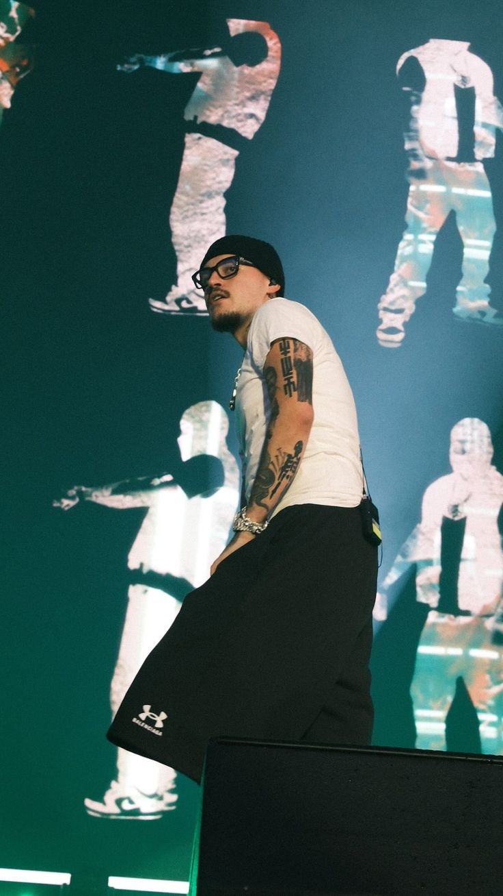
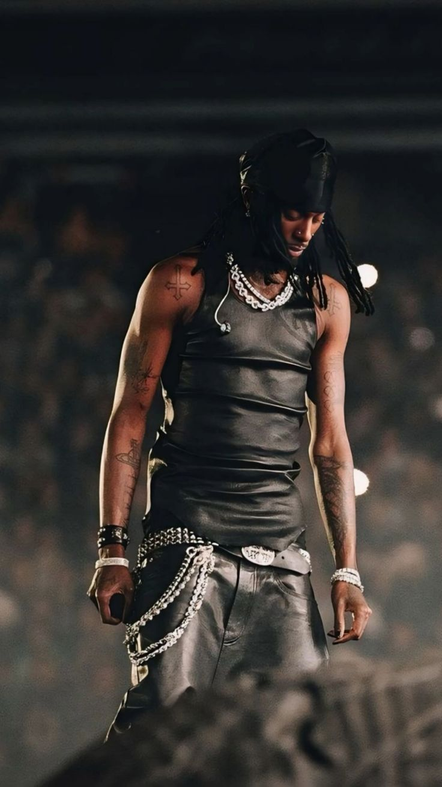
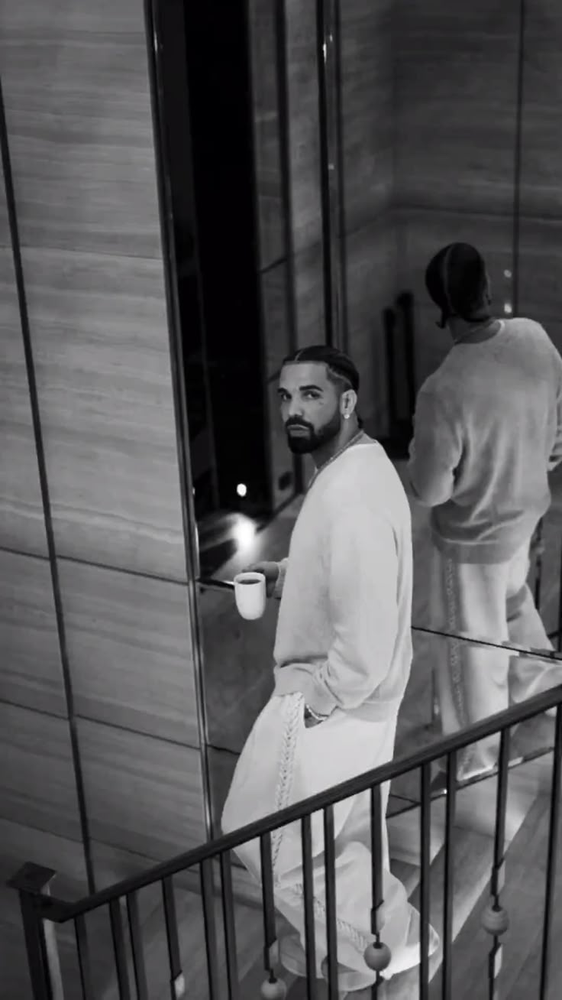

01
Yeat
Known for distorted production, unusual vocals and experimental approaches to modern trap.
Explore artistPERSONAL MUSIC ARCHIVE / 2026
A small collection dedicated to five artists whose music, sound and style stand out to us the most.
Explore the archive →
FLEXBOX COLLECTION
Three artists selected from our archive.
01
Known for distorted production, unusual vocals and experimental approaches to modern trap.
Explore artist
02
Atlanta artist recognized for his experimental vocals and strong influence on rage music.
Explore artist
03
Canadian rapper and singer known for combining hip-hop, R&B and pop influences.
Explore artistTHE FULL SELECTION
WHY THESE FIVE?
We chose these artists because each of them brings a different character to modern hip-hop. Some changed the mainstream, while others helped shape newer sounds.
CURATED BY
Student and music listener. This archive represents a personal selection of artists I listen to and find interesting because of their sound, creativity and influence.